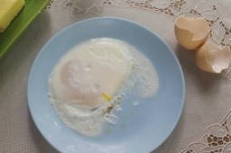

Яичница – прекрасное блюдо для завтрака. Готовится она быстро и просто, а кроме того, содержит множество витаминов, микроэлементов, протеина, а также полезных жиров. Благодаря этому вы получите заряд необходимых веществ на весь день. Есть множество способов приготовить вкусную яичницу, и в этой статье мы рассмотрим 10 самых, на наш взгляд, интересных рецептов.
- Как вкусно пожарить яичницу с помидорами, сыром и колбасой на сковороде?
- Простой рецепт яичницы-глазуньи из 2-х яиц на завтрак
- Пошаговый рецепт приготовления яичницы с сыром и колбасой
- Сытная и очень вкусная яичница с помидорами, луком и колбасой
- Яичница с беконом на сковороде — настоящий английский завтрак
- Очень простая и красивая яичница с сосисками в форме сердца
- Простой и очень быстрый рецепт яичницы в хлебе на завтрак
- Пошаговый рецепт приготовления яичницы с грибами шампиньонами
- Невероятно вкусная яичница с сыром, колбасой и помидорами в духовке
- Как по-быстрому приготовить яичницу в микроволновке?
Как вкусно пожарить яичницу с помидорами, сыром и колбасой на сковороде?
Сочная, ароматная и нежная яичница с помидорами, вареной колбасой и плавленым сыром будет отличным завтраком. Готовить ее легко, а результат точно обрадует вас и всю вашу семью.
Время готовки: 25 мин.
Время приготовления: 10 мин.
Порций – 2.
- Яйцо куриное 2 шт.
- Сыр плавленый ½ шт.
- Помидор 1 шт.
- Лук красный ½ шт.
- Вареная колбаса 50 гр.
- Молоко коровье 3 ст.л.
- Масло растительное 1 ст.л.
- Перец чёрный молотый по вкусу
- Укроп по вкусу
- Соль по вкусу
-
 Соединяем яйца с молоком, добавляем перец и соль. Взбиваем все венчиком.
Соединяем яйца с молоком, добавляем перец и соль. Взбиваем все венчиком. -
Нарезаем колбасу и сыр кубиками, помидор – дольками, шинкуем красный лук.
-
Обжариваем колбасу с луком на растительном масле около 5 минут.
-
Добавляем плавленый сыр и помидоры, перемешиваем.
-
Вливаем яичную смесь и обжариваем все в течение 4 минут. Посыпаем зеленью.
-
Тщательно перемешиваем и обжариваем еще пару минут.
-
 Снимаем готовую яичницу с огня и перекладываем на тарелки.
Снимаем готовую яичницу с огня и перекладываем на тарелки.


Приятного аппетита!
Простой рецепт яичницы-глазуньи из 2-х яиц на завтрак
Мягкий, прожаренный белок, текучий и нежный желток и хрустящий краешек – вот рецепт идеальной глазуньи. С нашим рецептом вы сможете приготовить именно такую яичницу, не затратив много времени и сил.
Время готовки: 20 мин.
Время приготовления: 10 мин.
Порций – 2.
Ингредиенты:
- Яйца – 2 шт.
- Масло растительное – 1 ч.л.
- Соль – по вкусу
- Перец красный острый хлопья – по вкусу
Процесс приготовления:
- Сковороду разогреваем на большом огне в течение полминуты. Снижаем огонь до минимума и маслом тщательно смазываем сковороду.
- Осторожно разбиваем на сковороду яйца так, чтобы желток оставался целым.

- На минимальном огне зажариваем яйца, пока белок не достигнет желаемой консистенции. Готовая яичница должна легко соскальзывать на тарелку.
- Солим яйца, посыпаем хлопьями красного перца или любой другой приправой по желанию.
- Глазунья готова, приятного аппетита!

Пошаговый рецепт приготовления яичницы с сыром и колбасой
Вкусный и сытный завтрак, который зарядит вас энергией на весь день. Привычный вкус яичницы приятно дополнен колбасой и твердым сыром, что добавит привычному блюду новизны. Дополнить этот рецепт можно подачей с овощами или гарниром.
Время готовки: 15 мин.
Время приготовления: 10 мин.
Порций – 4.
Ингредиенты:
- Яйца – 8 шт.
- Сыр твердый – 100 гр.
- Колбаса полукопченая – 200 гр.
- Масло оливковое – 2 ст.л.
- Специи – по вкусу
- Соль – по вкусу
- Зелень – по вкусу
Процесс приготовления:
- Подготавливаем необходимые продукты.

- Нарезаем колбасу сначала кольцами, а затем четвертинками.
- Ставим на плиту сковороду, наливаем масло. Нагреваем и выкладываем жариться колбасу.
- Мелко нарезаем зелень, пока колбаса обжаривается.
- Аккуратно по одному вбиваем яйца в миску, чтобы не повредить желток.
- Осторожно вливаем яйца на сковороду. Изначально жарим на большом огне, а затем уменьшаем, дабы белок не распространился по всей сковороде.
- Пока яйца жарятся, натираем сыр.

- Яйца солим, приправляем специями по вкусу. Сверху посыпаем сыром так, чтобы он успел расплавиться.
- Готовую яичницу оставляем на сковороде, пока белок не станет молочно-белого цвета. Приятного аппетита!
Сытная и очень вкусная яичница с помидорами, луком и колбасой
Прекрасный сытный завтрак, который позволит плотно подкрепиться перед физической работой или во время холодов. Яичницу можно подавать как отдельно, так и с гарниром, а также заправлять майонезом или горчицей.
Время готовки: 30 мин.
Время приготовления: 15 мин.
Порций – 4.
Ингредиенты:
- Яйца – 8 шт.
- Колбаса вареная – 500 гр.
- Масло растительное – 2 ст.л.
- Помидоры – 2 шт.
- Лук репчатый – 2 шт.
- Соль – по вкусу
- Перец черный молотый – по вкусу
Процесс приготовления:
- Подготавливаем все продукты.
- Нарезаем колбасу мелким кусачками.
- Лук в свою очередь нарезаем полукольцами.
- Обдаем помидоры кипятком, снимаем кожицу и нарезаем небольшими кубиками.
- Разогреваем на сильном огне растительное масло, выкладываем на него лук и колбасу. Обжариваем, помешивая, на среднем огне около 5 минут до зарумянивания колбасы.
- Добавляем кубики помидора, снова перемешиваем. Обжариваем около 4 минут.
- Распределяем начинку по сковороде и разбиваем на нее яйца.
- Солим и перчим по вкусу. Яйца жарим 3 минуты, затем выключаем плиту, накрываем сковороду крышкой и доводим блюдо до готовности.
- Раскладываем яичницу по тарелкам. Приятного аппетита!
Яичница с беконом на сковороде — настоящий английский завтрак
Настоящий английский завтрак никогда не обходится без яичницы с беконом. Готовить ее быстро и просто, а ингредиенты всегда доступны в любом магазине. Такое блюдо идеально для завтрака, так как оно получается очень аппетитным, сытным и обеспечит вас силами на весь день.
Время готовки: 15 мин.
Время приготовления: 10 мин.
Порций – 3.
Ингредиенты:
- Яйца – 3 шт.
- Бекон – 60 гр.
- Перец черный молотый – по вкусу
- Соль – по вкусу
- Зелень – по вкусу
Процесс приготовления:
- Подготавливаем все необходимые продукты. Лучше всего подойдут яйца покрупнее и копченый бекон.
- Нарезаем бекон тонкими пластинками. Можно также использовать и готовую нарезку. По вкусу можно разрезать каждую пластинку на кусочки поменьше.
- Разогреваем сковороду и выкладываем на нее ломтики бекона. Жарим их примерно по 3 минуты с обеих сторон до золотистой корочки. Если жир начинает брызгаться, убавляем огонь.
- Отодвигаем бекон лопаткой в стороны и осторожно разбиваем яйца в центр сковороды так, чтобы желтки оставались целыми. Жарим яичницу на среднем огне в течение 5 минут. Желток должен быть полужидким.
- Раскладываем блюдо по тарелкам и сверху украшаем зеленью. Подаем отдельно или с овощами. Приятного аппетита!
Очень простая и красивая яичница с сосисками в форме сердца
Бюджетный, но красивый завтрак, которым с легкостью можно порадовать вашу вторую половинку. Получается вкусно, питательно и очень симпатично. А главное, что необходимые ингредиенты наверняка найдутся в холодильнике у каждого.
Время готовки: 20 мин.
Время приготовления: 10 мин.
Порций – 2.
Ингредиенты:
- Яйца – 3 шт.
- Сосиски – 3 шт.
- Зелень – по вкусу
- Соль – по вкусу
- Масло растительное – 3 ч.л.
Процесс приготовления:
- Подготавливаем все необходимое для приготовления.
- Очищаем сосиски.
- Сосиски варим в течение 2-3 минут, чтобы они стали более эластичными.
- Достаем проваренные сосиски.
- Разрезаем каждую сосиску вдоль, оставляя кончик неразрезанным.
- Аккуратно выворачиваем края сосиски наружу, закрепляем их зубочисткой.
- Выкладываем сосиски на сковороду и жарим на среднем огне около 2 минут.
- Получившиеся сердечки переворачиваем и лопаткой прижимаем к сковороде.
- Осторожно вбиваем внутрь каждого сердечка яйцо.
- Накрыв яичницу крышкой, жарим ее около 10 минут на медленном огне.
- Готовность определяем по белку. Солим и выкладываем яичницу на тарелку, украшаем зеленью и свежими овощами по своему вкусу.
- Подаем блюдо к столу. Приятного аппетита!
Простой и очень быстрый рецепт яичницы в хлебе на завтрак
Такой завтрак хоть и просто готовится, но выглядит очень оригинально. Блюдо совмещает в себе и тост, и яичницу, а готовится очень быстро и просто. Такой завтрак порадует как детей, так и взрослых и точно запомнится!
Время готовки: 10 мин.
Время приготовления: 5 мин.
Порций – 1.
Ингредиенты:
- Яйцо – 1 шт.
- Хлеб – 1 кусочек
- Масло растительное – 1 ст.л.
- Перец черный молотый – по вкусу
- Соль – по вкусу
Процесс приготовления:
- Подготавливаем ингредиенты. Хлеб можно брать как свежий, так и не очень, подсохший хлеб даже лучше подрумянится и будет более хрустящим. Яйца лучше взять не сильно крупные, чтобы они поместились в тост.
- Хлеб разрезаем на кусочки толщиной не менее 1,5 сантиметра, чтобы он смог удержать яйцо. В центре кусочка вырезаем отверстие, в которое в дальнейшем разобьем яйцо.
- Лучше всего для вырезки подойдет фигурная вырубка для печенья – она придаст интересный вид нашей яичнице. Мякиш оставляем, его мы тоже поджарим на сковороде и сделаем из него красивый фигурный тост.
- Смазываем сковороду растительным маслом и хорошенько разогреваем его на сильном огне. Выкладываем на сковороду хлеб и обжариваем с одной стороны до румяности.
- Переворачиваем тосты и даем чуть зарумяниться с другой стороны. Осторожно, чтобы не повредить желток, вбиваем в отверстие яйцо. На хорошо разогретой сковороде яйцо сразу должно схватиться. Добавляем соль и перец по вкусу.
- На среднем огне прожариваем яйцо примерно 2 минуты без крышки и еще 3 минуты под крышкой.
- Готовую яичницу снимаем со сковороды и сразу подаем к столу. Приятного аппетита!
Пошаговый рецепт приготовления яичницы с грибами шампиньонами
Завтрак из яичницы с шампиньонами получается очень сытным и вкусным и приятно разнообразит рацион. На это время не уйдет много времени, а готовить его очень просто. По желанию к яичнице можно добавить сыр или мясо.
Время готовки: 10 мин.
Время приготовления: 5 мин.
Порций – 3.
Ингредиенты:
- Яйца – 3 шт.
- Шампиньоны – 100 гр.
- Лук репчатый – 0,5 шт.
- Чеснок – 1 зубчик
- Масло растительное – 1 ст.л.
- Специи – по вкусу
- Соль – по вкусу
Процесс приготовления:
- Чистим чеснок и нарезаем его тонкими пластинами. Добавляем растительное масло в сковороду и разогреваем. Чеснок зажариваем до яркого золотистого цвета и убираем из сковородок. В дальнейшем будем жарить яичницу именно на пропитавшемся чесноком масле.
- Очищаем лук и нарезаем полукольцами. Выкладываем на сковороду и обжариваем, периодически помешивая, до мягкости.
- Тщательно промываем шампиньоны, обсушиваем их. Нарезаем грибы пластинками и выкладываем их на сковороду. Тщательно перемешиваем их с луком.
- На среднем огне обжариваем грибы до готовности около 10 минут, пока цвет шампиньонов не изменится и они не станут мягкими.
- Тщательно вымываем яйца.
- Лук с шампиньонами раздвигаем по краям сковороды, освобождая центр сковороды для яиц. Посыпаем яйца солью и специями по вкусу.
- Накрываем крышкой сковороду и доводим яичницу до готовности.
- Готовое блюдо украшаем зеленью. Приятного аппетита!
Невероятно вкусная яичница с сыром, колбасой и помидорами в духовке
Аккуратная и очень эстетичная яичница, которая порадует не только своим внешним видом, но и вкусом. А добавление колбасы, сыра и помидоров сделают такой завтрак сбалансированным, а также очень сытным и питательным, что обязательно даст вам и вашим близким заряд бодрости на весь день.
Время готовки: 25 мин.
Время приготовления: 10 мин.
Порций – 2.
Ингредиенты:
- Яйца – 4 шт.
- Сыр сулугуни – 2 ломтика
- Помидоры черри – 5 шт.
- Колбаса вареная – 2 ломтика
- Лук зеленый – 5 перьев
- Сливки – 8 ст.л.
- Масло сливочное – 1 ст.л.
- Соль – по вкусу
- Хлеб – 2 куска
Процесс приготовления:
- Разогреваем духовку до 180 градусов. Тщательно промываем лук и помидоры.
- Смазываем сливочным маслом формочки для запекания.
- Нарезаем колбасу полосками.
- Накладываем ее в формочки.
- Также нарезаем полосочками сулугуни и складываем в формочки.
- Помидоры черри нарезаем на половинки и отправляем к сыру с колбасой.
- Мелко нарезаем лук, посыпаем им начинку. Заливаем в каждую формочку 2 столовые ложки сливок.
- В каждую формочку вбиваем яйца, заливаем их еще 2 столовыми ложками сливок. Посыпаем солью.
- Наливаем в глубокий противень кипятка и ставим туда формочки так, чтобы вода доставала им до середины. Ставим противень в духовку на примерно 15 минут.
- Пока яичница готовится, делаем тосты.
- Осторожно достаем яичницу из духовки.
- Готовую яичницу подаем вместе с тостами. Приятного аппетита!
Как по-быстрому приготовить яичницу в микроволновке?
Очень простой и быстрый рецепт. Для приготовления такого завтрака не придется ждать разогрева плиты и сковороды, а кроме того, в такой яичнице не будет канцерогенов, так как готовится она без жарки на масле.
Время готовки: 3 мин.
Время приготовления: 2 мин.
Порций – 1.
Ингредиенты:
- Яйцо – 1 шт.
- Масло сливочное – 2 гр.
- Зелень – по вкусу
- Соль – по вкусу
Процесс приготовления:
- Подготавливаем наш минимальный набор ингредиентов. Масло можно взять как сливочное, так и растительное.
- Смазываем дно подходящей для микроволновки тарелки маслом.
- Моем яйцо, обсушиваем его и разбиваем в тарелку.

- Протыкаем желток, что яйцо не «взорвалось» и не запачкало микроволновку. Солим яйцо по вкусу.
- Ставим тарелку в микроволновку, выбираем время приготовления 1 минуту и выставляем максимальную мощность.
- Готовую яичницу украшаем зеленью по вкусу. Приятного аппетита!

{kind=link}
{kind=link}
{kind=link}
{kind=link}
{kind=link}